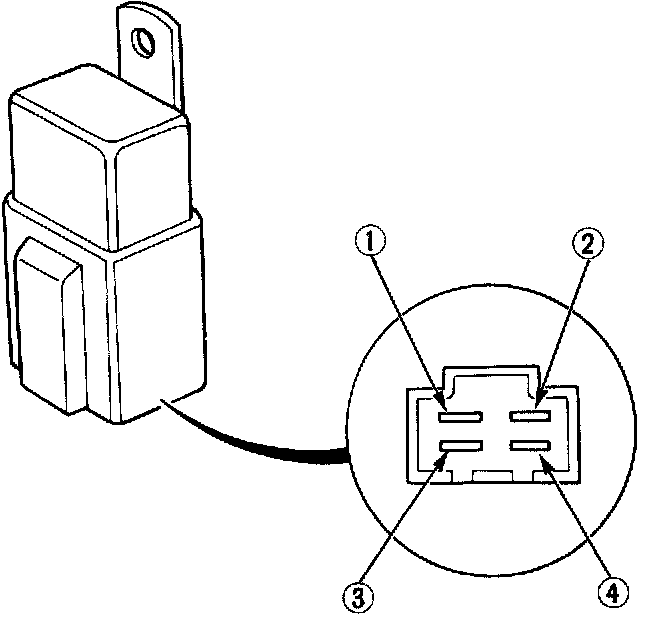

Condenser Fan Motor Relay: Testing and Inspection
RelayNOTE: The same type of relay is used for the compressor clutch, condenser fan and radiator cooling fan.

1. Check for continuity between terminals 1 and 3.
There should be no continuity.
2. Connect a 12V battery across terminals 2 and 4.
There should be continuity between terminals 1 and 3.